公式ストア・カフェ
SEGA STORE TOKYO
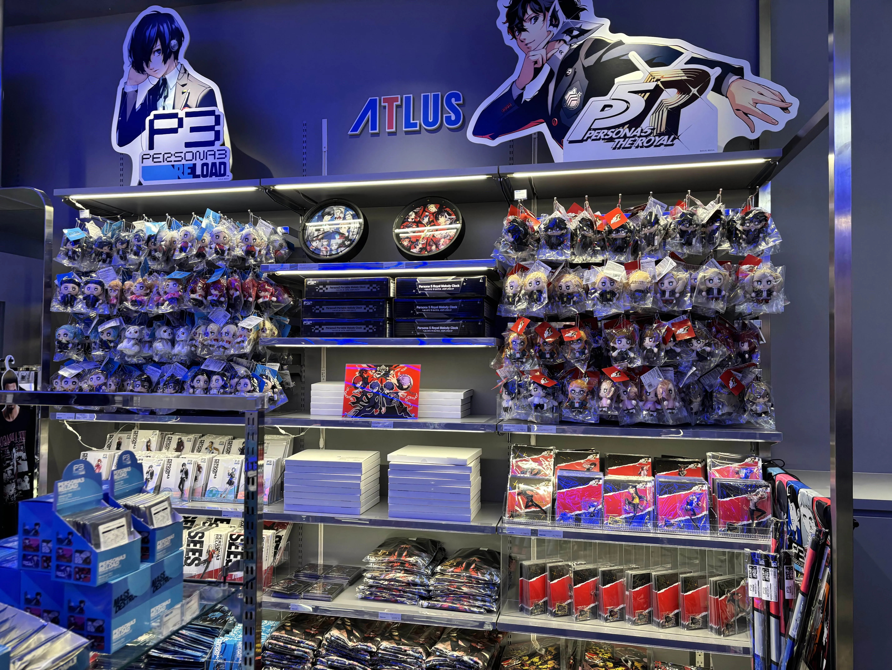
open 10:00～21:00
渋谷パルコ 6F
常設
SEGA公式ショップ！
こういうショップが常設なの
めっちゃ嬉しい
SEGAのショップだから
アトラス以外も結構いろいろあった
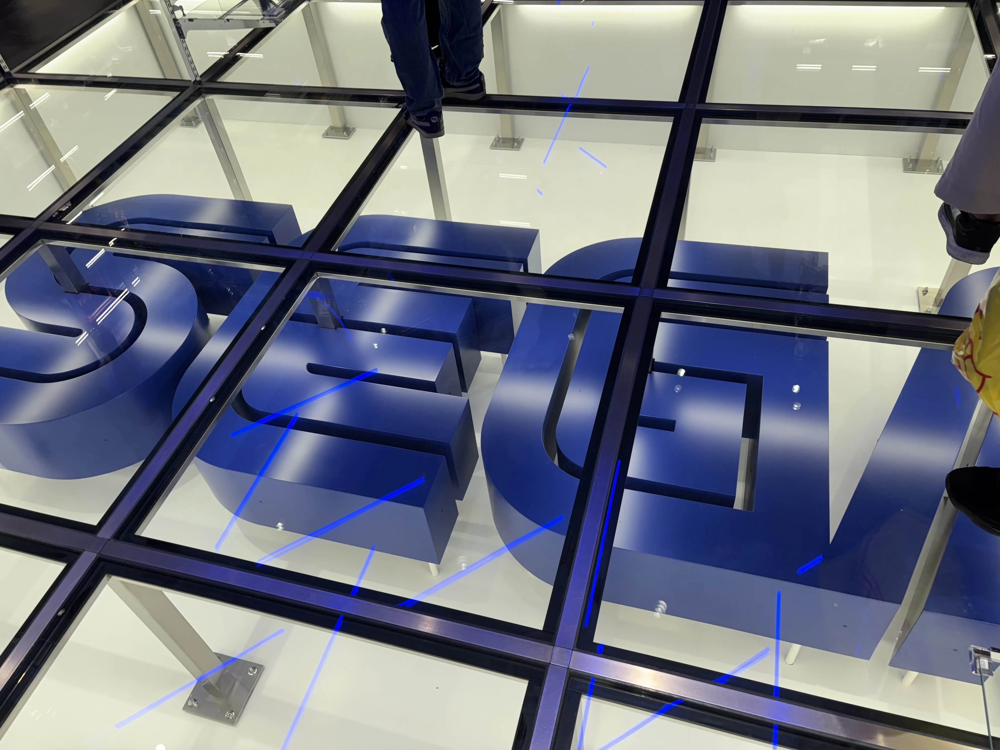
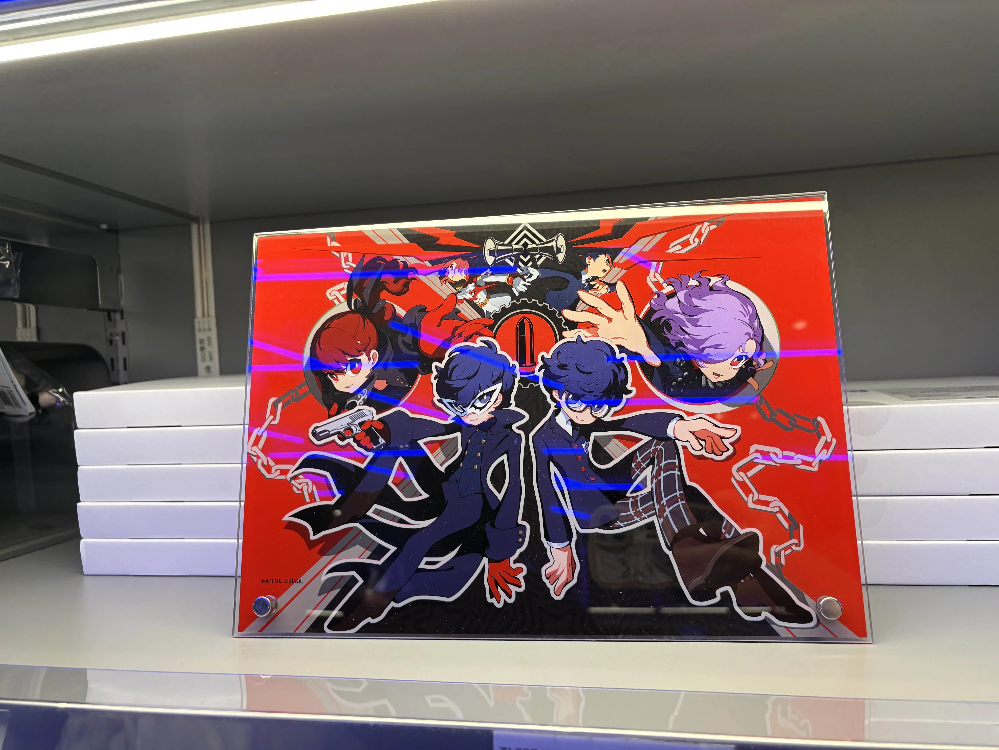
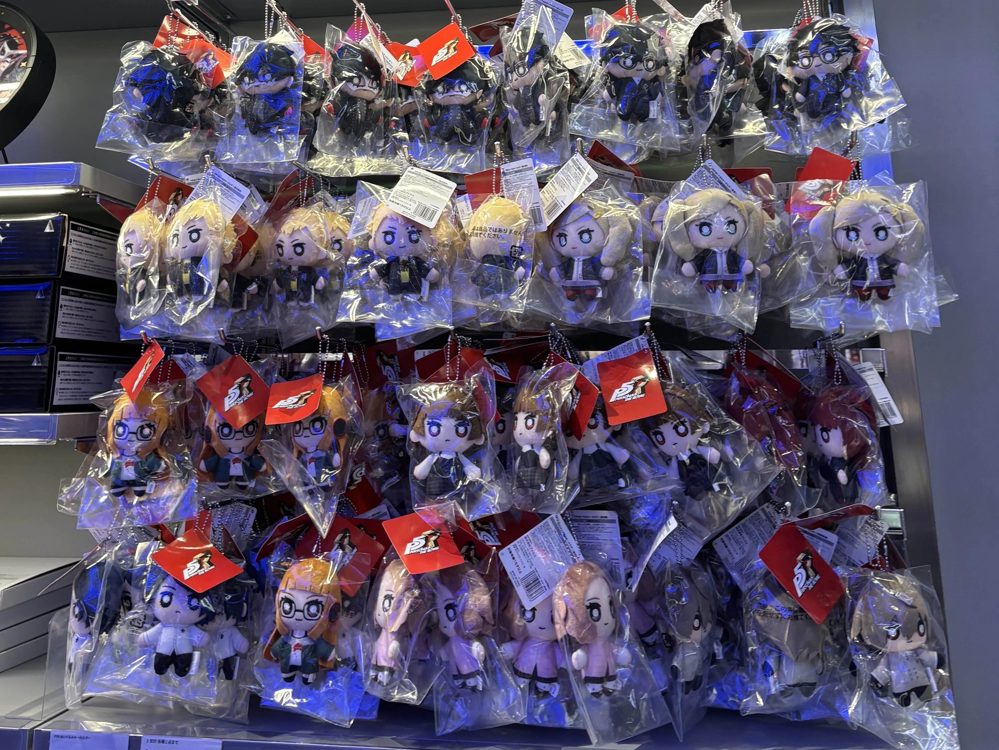
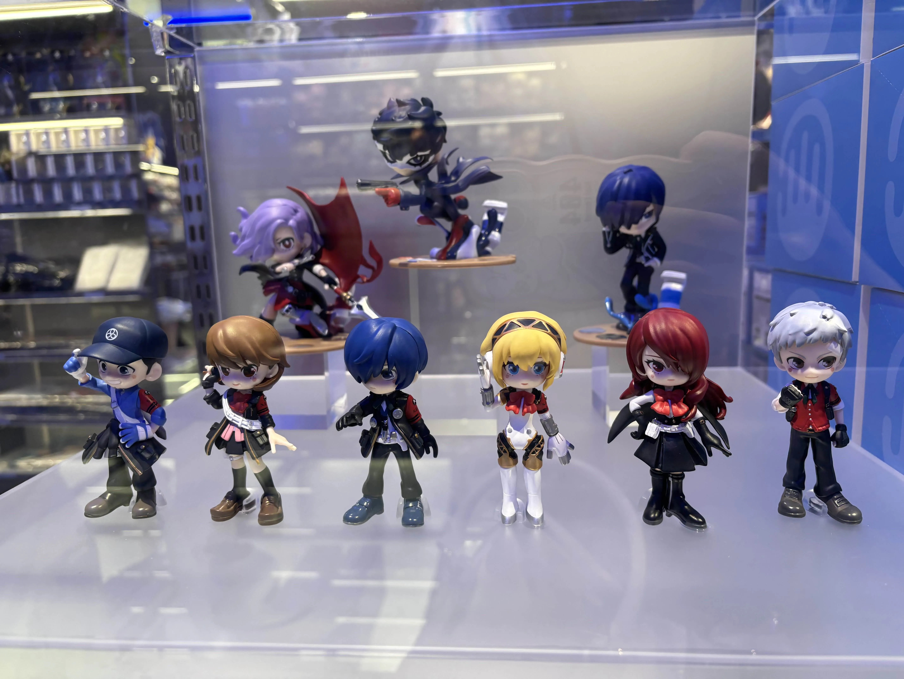
『ペルソナ５ ザ・ロイヤル』『ペルソナ５: The Phantom X』×AMOCAFE コラボカフェ
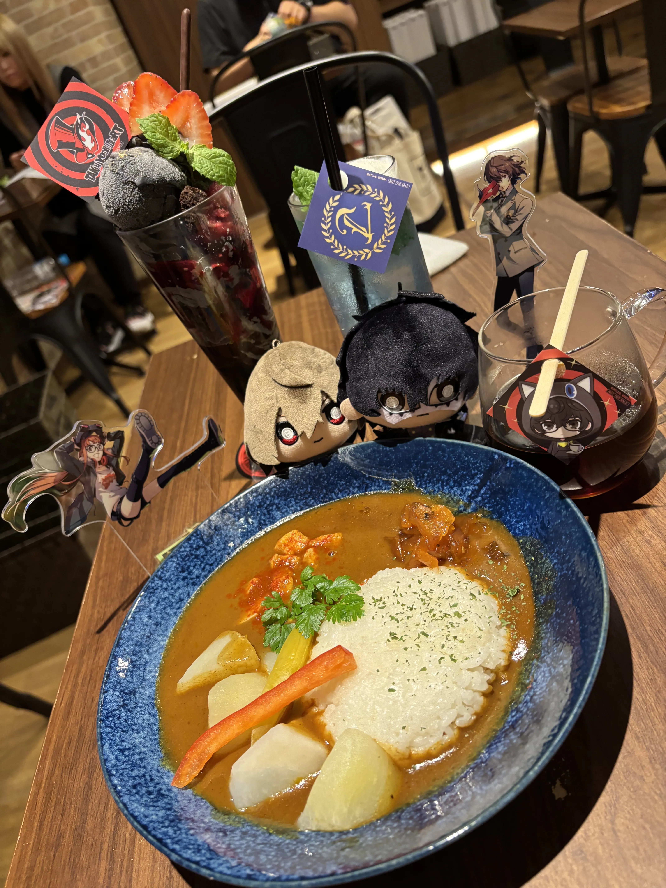
open 11:00〜20:30
2025/8/19～9/10
ペルソナコラボカフェ！
ルブランカレーと
ルブランコーヒー
こういうゲーム内に
出てくるものにオタクは弱い
ソースは私
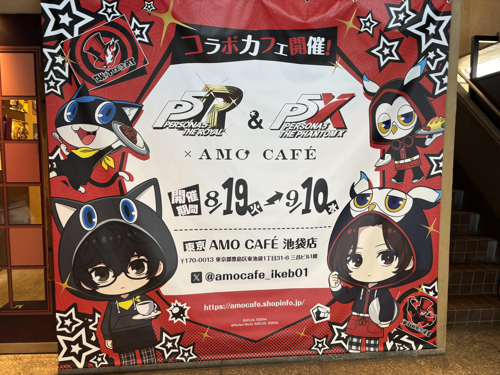
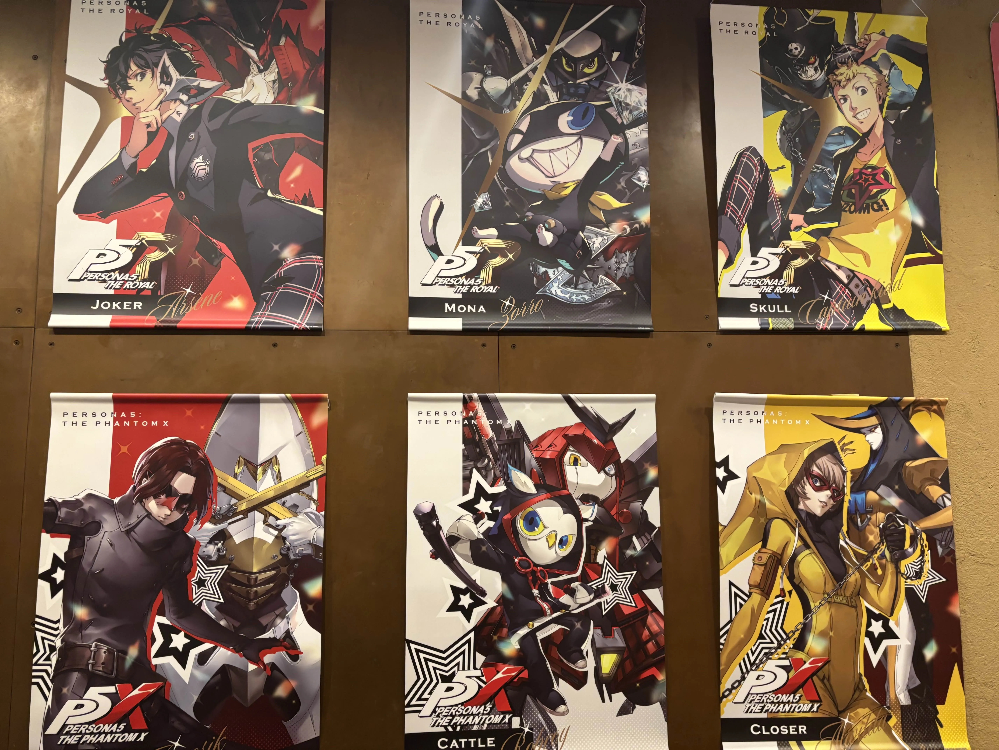
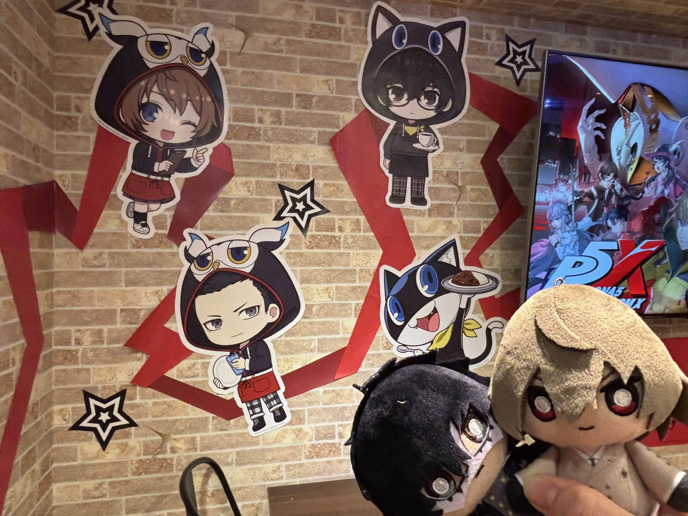
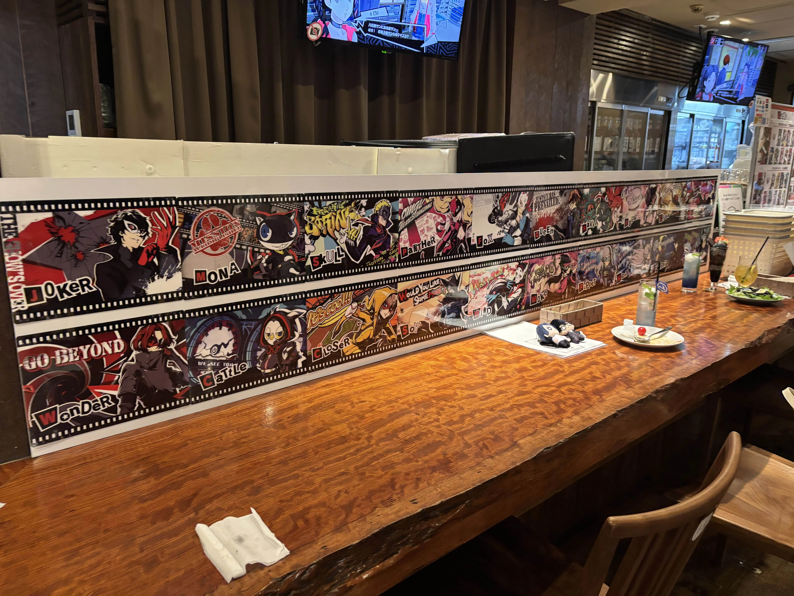
聖地巡礼
四軒茶屋駅
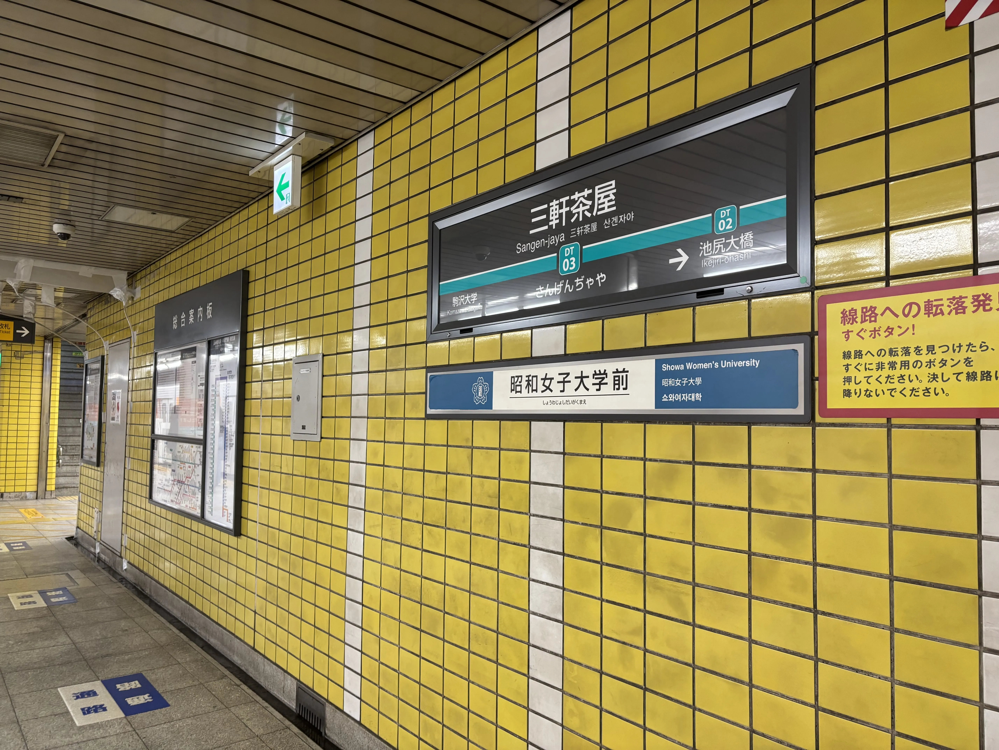
四軒茶屋(三軒茶屋)駅！
降りた瞬間の駅路黄色さがこれだ！ってなる
ここから毎日学校行ってたんだろうなぁ
純喫茶ルブラン

ルブランだ！
ここの屋根裏に住んでたってことか
聖地巡礼じゃなくてもこういう雰囲気の場所って
普通にめっちゃテンション上がる
富士の湯
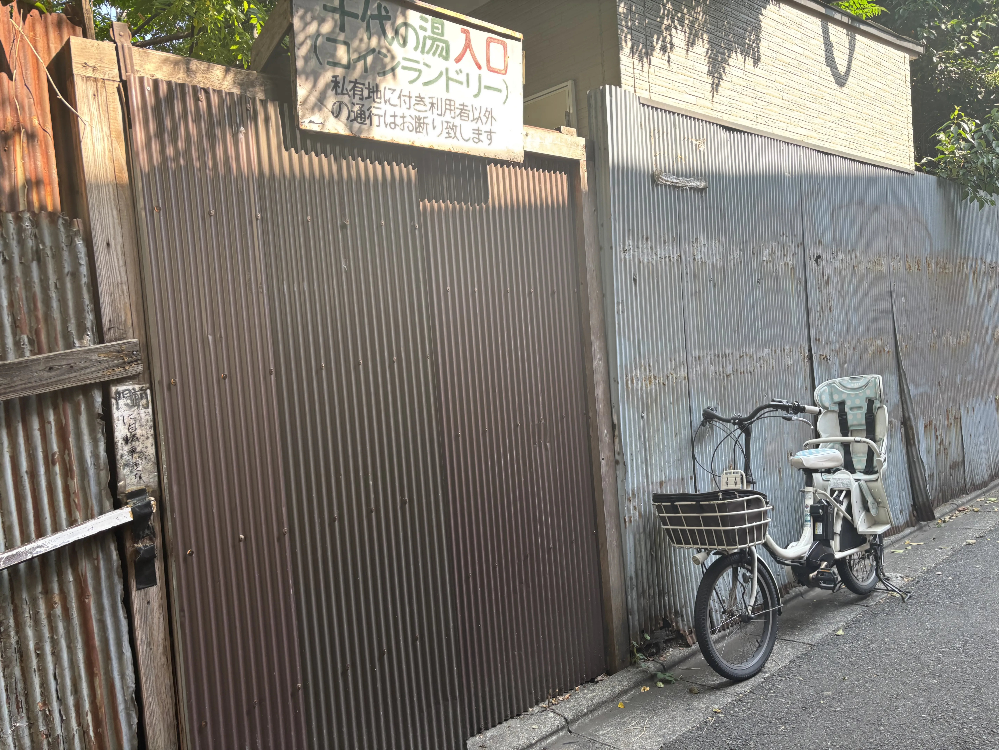
魅力が上がりそうな温泉
コインランドリー入りたかったけど空いてなくて残念
こういうところってまだ営業してるんかな？
バッティングセンター
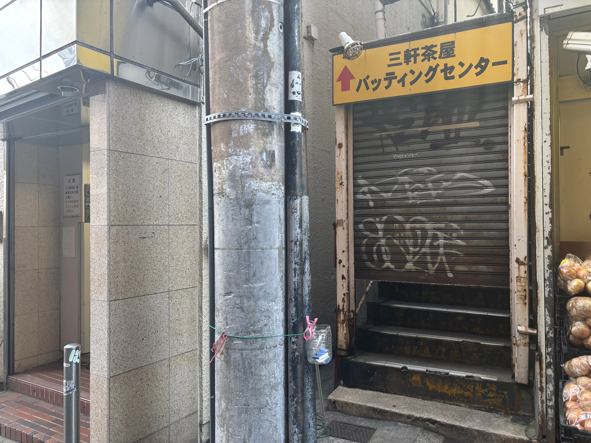
一番ここがペルソナだ！ってなる気がする
この階段めっちゃわくわくする
もう営業終了しちゃったらしい
この場所を残してくれてることに大感謝
器用さあげてこう
武見診療所

若干わかりにくいけど
ここが武見先生の病院っぽい
武見先生…マジで好きだ…
一番最初にコープマックス行ったな
通い詰めてたってことかぁ
渋谷駅
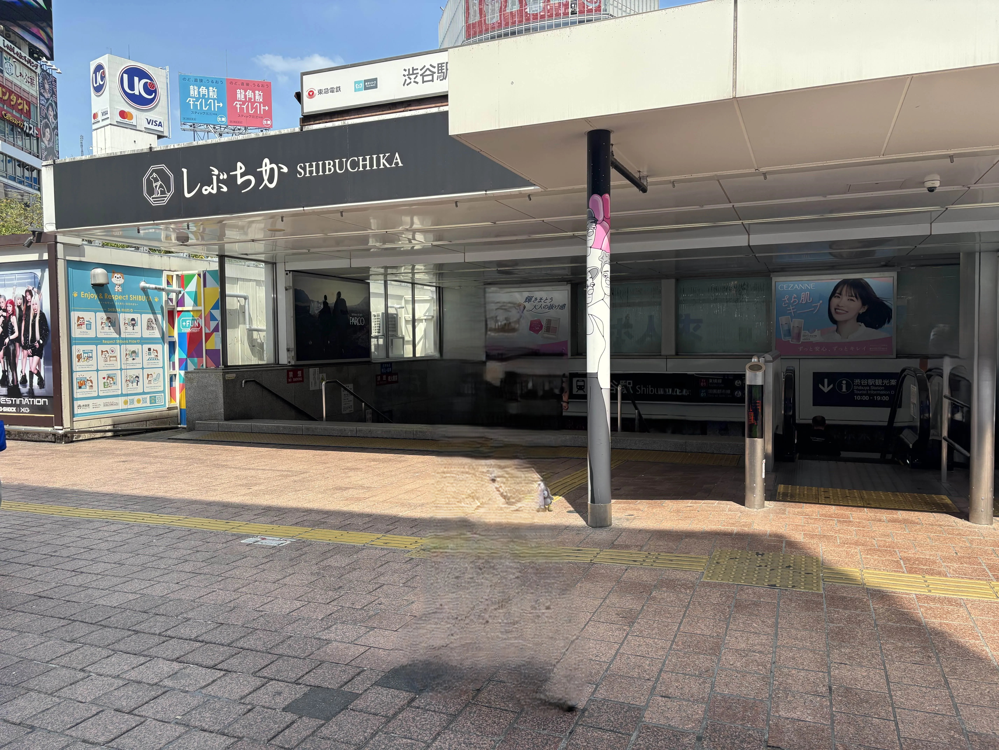
パレスから帰って来た時のここ
パレス終わった後の会話なんかすっごい好きだったな
私も怪盗団になりたい